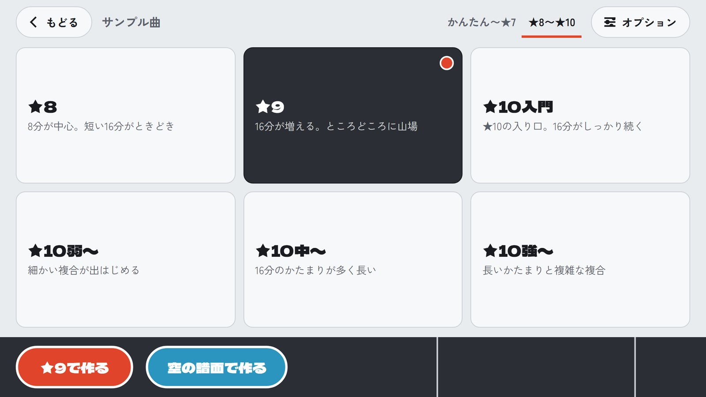

TJA採譜台 Android 版のテストに協力してくれる方を募集します
こんにちは、maosun です。
「TJA採譜台」の Android アプリ版を作りました。中身は iPhone アプリ版と同じで、曲から太鼓の譜面（TJA）を作れます。
ただ、Google Play には「12人以上の方に14日間続けて試してもらってからでないと、一般公開できない」という決まりがあります。 そこで、テストに協力してくれる方を募集します。Android のスマホ・タブレットをお持ちの方、よければ力を貸してください。


参加のしかた（無料・3分ほど）
1. Google グループ「TJA採譜台 Android テスト」に参加する 2. テスト参加のページを開いて「テスターになる」を押す 3. そのページから Google Play へ進んで、アプリを入れる
Google グループ「TJA採譜台 Android テスト」を開く
グループには、Google Play で使っている Google アカウントで参加してください。グループのページでは「権限がありません」と出ますが、上の「グループに参加」を押せば大丈夫です。
グループに参加できると、「グループに参加」のボタンが消えます。
参加してすぐは、Google Play で「アイテムが見つかりませんでした」と出ることがあります。反映までに時間がかかるためです。少し時間をおいてから、もう一度開いてください。
また、Google Play で使っている Google アカウントと、グループに参加したアカウントが同じか確かめてください。違っていると、時間をおいても出てきません。
お願い
- 入れたあと、14日間はアプリを消さずにそのままにしてください。途中でテストから抜けると、人数に数えられなくなります。
- 毎日使わなくても大丈夫です。気が向いたときに触ってもらえれば十分です。
- 対象は Android 7.0 以上です。
知っておいてほしいこと
- テスト版なので、広告は見本の広告（テスト広告）が出ます。
- お金はかかりません。アプリの中で買うものもありません。
- 参加した方のメールアドレスは、ほかの参加者には見えません。作者には見えますが、テストの人数を確かめる以外には使いません。
- テストが終わって一般公開されたら、そのまま公開版にアップデートできます。入れ直しはいりません。
- ヨーロッパの一部の国（EU・イギリスなど）では、今のところ入れられません。
困ったとき・気づいたこと
うまく入れられない、動きがおかしい、ここが使いにくい、などがあれば下のメールへ送ってください。
maosun.dev.support@gmail.com
ブラウザ版（無料）と iPhone アプリ版は、今まで通り使えます。
https://maosun-dev.com/tjasaifu/
協力してもらえたら、とてもうれしいです。よろしくお願いします！